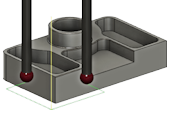
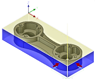

Model Boss
Stock Boss
Based on the Probe Mode, you can select the Model or the Stock.
Select a single face, perpendicular faces or parallel / opposite faces.
Probe Type options will change based on your selections.
 |
 |
Model Corner |
Stock Corner |
|
|
Model Boss |
Stock Boss |